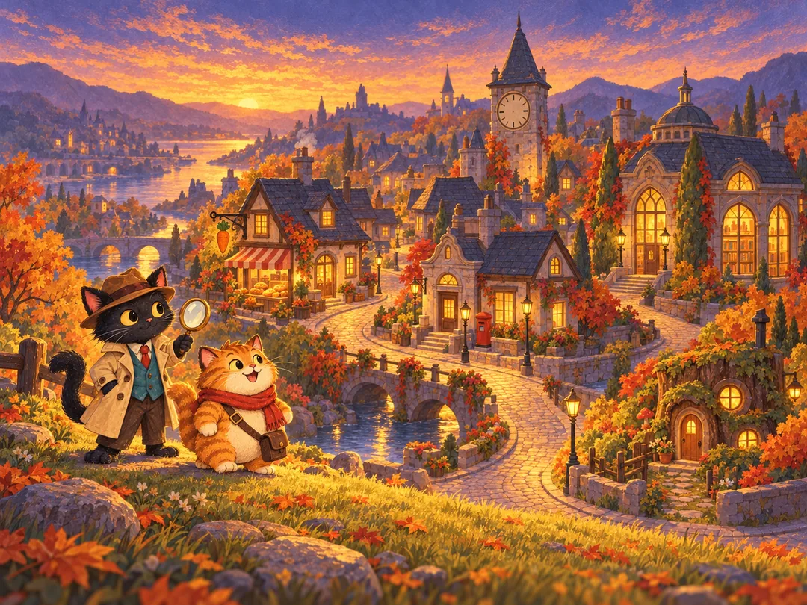
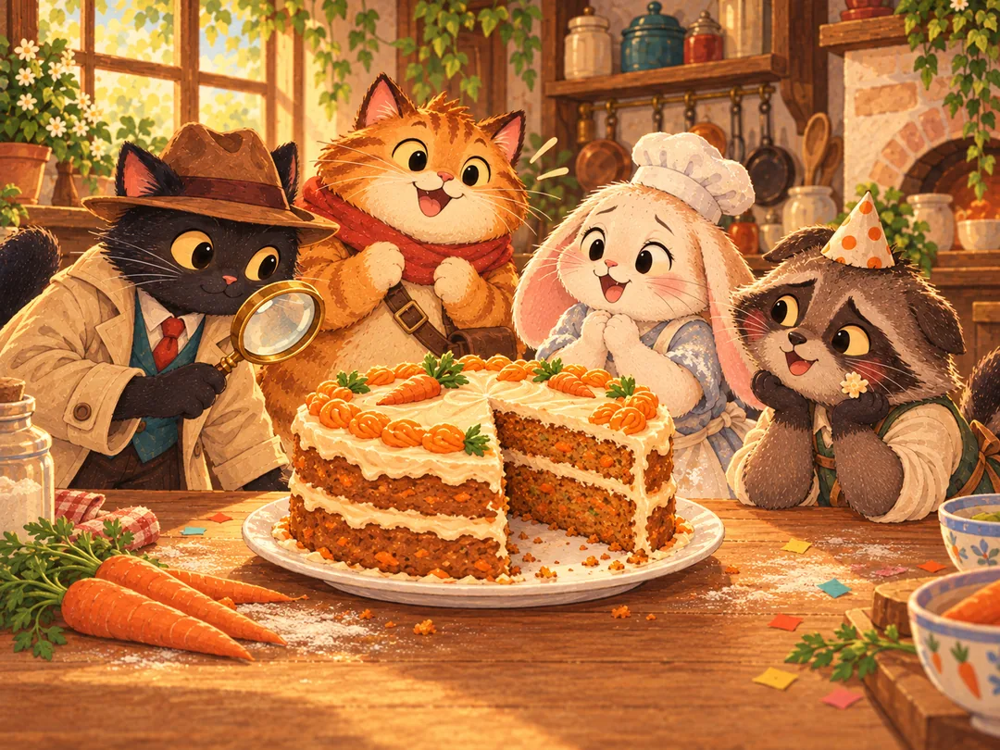
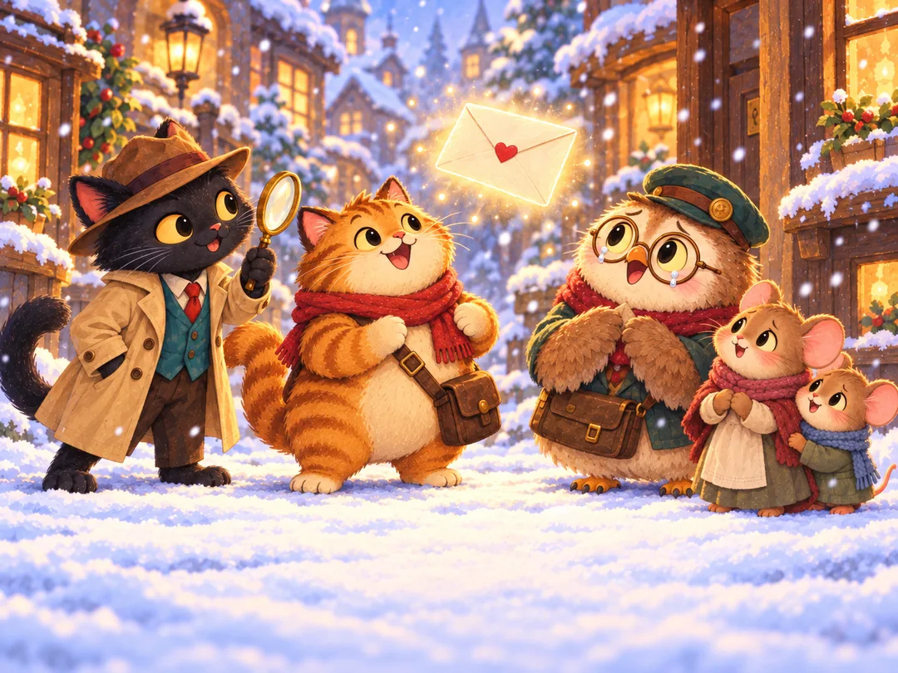
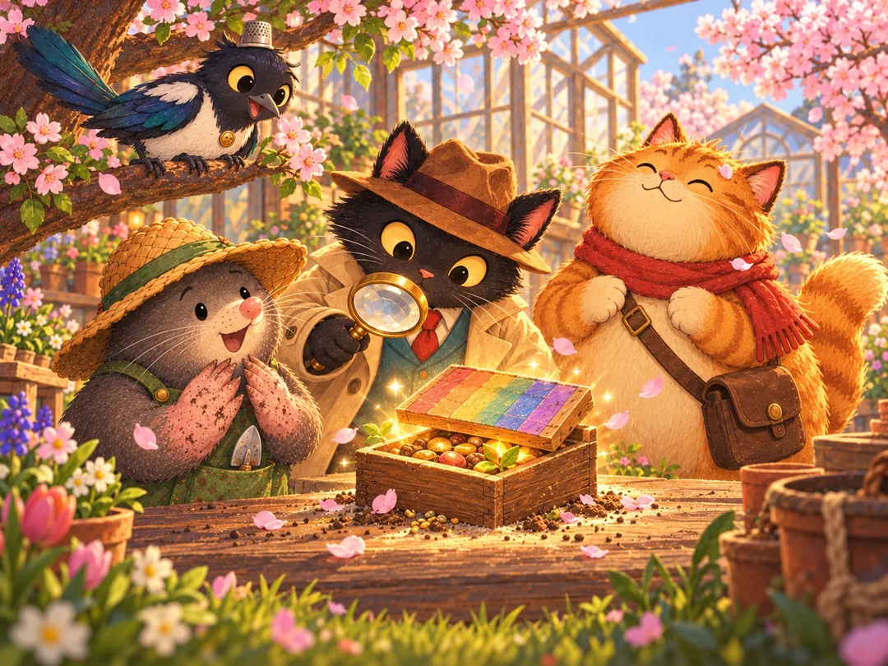
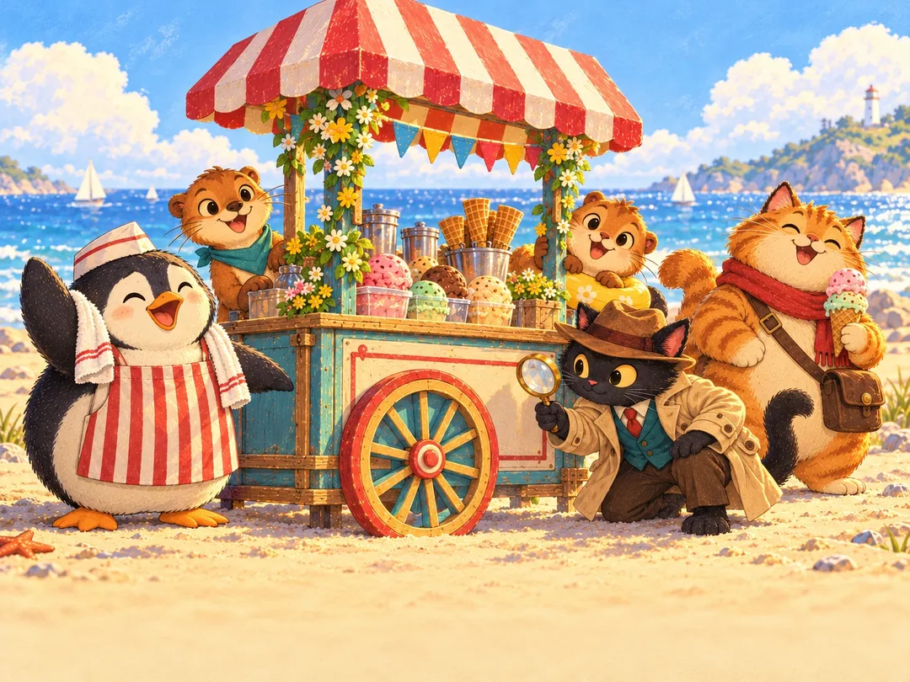
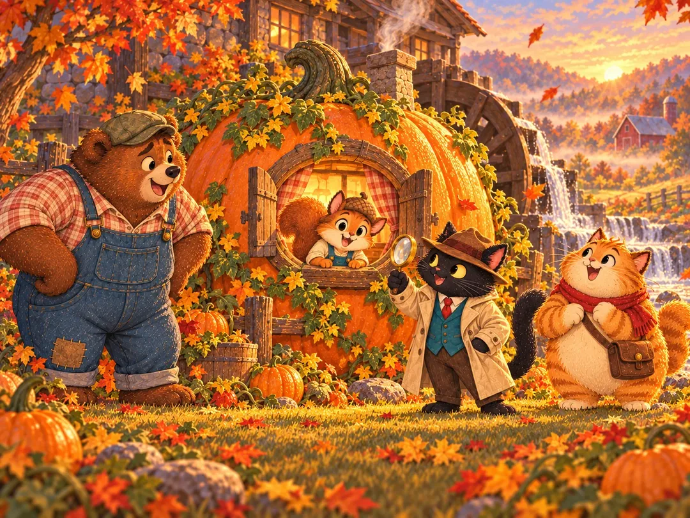

게임 소개About the game
검은 고양이 탐정 먹물과 먹보 조수 보리가 동물 마을의 작은 사건을 풀어 갑니다. 사라진 당근 케이크, 사라진 편지, 사라진 꽃씨 상자… 장면 속에 숨은 단서를 찾아내면 사건의 진실이 따뜻하게 드러납니다.
Inky, a black cat detective, and Barley, his food-loving assistant, solve small mysteries in a cozy animal village. A missing carrot cake, a lost letter, a vanished seed box… find the hidden clues in each scene and the warm truth behind every case is revealed.
손으로 그린 듯한 세계A hand-painted world
구아슈 동화풍 일러스트로 가득한 장면마다 계절과 날씨, 시간이 달라집니다.
Gouache storybook scenes that change with the season, weather and time of day.
악당 없는 이야기Stories without villains
모든 사건은 오해, 사정, 선의에서 시작합니다. 결말은 늘 화해와 나눔입니다.
Every case begins with a misunderstanding, a need or a kind heart, and ends in friendship.
부담 없는 수사Relaxed detective work
제한 시간 없이 즐기고, 막히면 돋보기와 보리의 코 레이더로 힌트를 얻으세요.
No time pressure. Use the magnifier or Barley's nose radar when you're stuck.
수집과 도감Collect them all
찾은 단서는 도감에 쌓이고, 모을수록 보상이 열립니다.
Every clue you find joins your Clue Book and unlocks rewards.
한국어 · EnglishEnglish · 한국어
한국어와 영어를 모두 지원하고 언제든 바꿀 수 있습니다.
Fully playable in English and Korean, switch any time.
240개의 스테이지240 stages
4개의 챕터, 48개의 에피소드로 이어지는 이야기 (순차 공개 예정).
Four chapters and 48 episodes of stories (released in stages).
챕터 1 · 마을 사건Chapter 1 · Village Cases






문의Contact
게임에 대한 문의와 의견은 아래 연락처로 보내 주세요.
Questions and feedback are welcome at the address below.
strophicgames@gmail.com